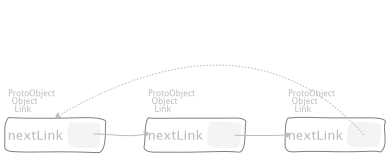
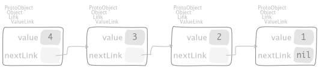
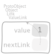
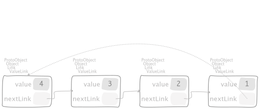

5. Links¶
5.1. Link objects¶
Our discussion starts with a tiny class Link that is provided by default in
a fresh image; its definition follows,
Object << #Link
slots: { #nextLink };
tag: 'Links';
package: 'Collections-Support'
"An instance of me is a simple record of a pointer to another Link. I am an abstract class; my concrete subclasses, for example, Process, can be stored in a LinkedList structure."
The simplest Link object is
"CTLinksLinkTest, protocol tests"
testEmptyLink
| l |
l := Link new.
^ self exportSlotsGraphOf: l

where the object nil is used to interrupt a chain of references; in particular, here we
have a chain of just one link object. To augment such a chain, we can
either create a new
Linkobject and then link the previous one to it,"CTLinksLinkTest, protocol tests" testLinkReferencingAnotherLink | l1 l2 | l1 := Link new. l2 := Link new. l1 next: l2. ^ self exportSlotsGraphOf: l1

or link the
Linkto itself to have an implicitly infinite chain,"CTLinksLinkTest, protocol tests" testLinkReferencingItself | l | l := Link new. l next: l. ^ self exportSlotsGraphOf: l
by the message next: understood by Link objects,
"Link, protocol *Containers-Essentials"
next: anObject
^ anObject nextFromLink: self
that dispatches the message
"Link, protocol *Containers-Essentials"
nextFromLink: aLink
^ aLink nextLink: self
that dispatches back the message
"Link, protocol accessing"
nextLink: aLink
"Store the argument, aLink, as the link to which the receiver refers.
Answer aLink."
^ nextLink := aLink
which sets the connection, actually. Of course, we can create arbitrary long (possibly endless) chains,
"CTLinksLinkTest, protocol tests"
testThreeLinksReferencingEachOther
| l1 l2 l3 |
l1 := Link new.
l2 := Link new.
l3 := Link new.
l1 next: l2.
l2 next: l3.
l3 next: l1.
^ self exportSlotsGraphOf: l1

and we can skip and move forward with
"CTLinksLinkTest, protocol tests"
testLinkNext3
| l1 l2 l3 l |
l1 := Link new.
l2 := Link new.
l3 := Link new.
l1 next: l2.
l2 next: l3.
l3 next: l1.
l := l1 next: 3.
self assert: l nextLink nextLink nextLink equals: nil.
^ self exportSlotsGraphOf: l
by means of polymorphism over the nextFromLink: message also undertood by
Integer objects,
"Integer, protocol *Containers-Essentials"
nextFromLink: aLink
^ aLink nextInteger: self
that dispatches back again to Link objects
"Link, protocol *Containers-Essentials"
nextInteger: n
^ n = 0
ifTrue: [ nil ]
ifFalse: [ self class nextLink: (nextLink nextInteger: n - 1) ]
to actually skim over the chain of links, raising an exception if a Link is
requested to skip too much,
"CTLinksLinkTest, protocol tests"
testThreeLinksTooMuchSkipping
| l1 l2 l3 |
l1 := Link new.
l2 := Link new.
l3 := Link new.
l1 next: l2.
l2 next: l3.
^ self shouldnt: [ l1 next: 10 ] raise: SubscriptOutOfBounds
5.2. ValueLink objects¶
A Link by itself encodes just a node of a chain. We can augment those
objects such that each node in the chain carries a value also, to have a
chain of values actually. Such new objects belong to the class
Link << #ValueLink
slots: { #value };
tag: 'Links';
package: 'Collections-Support'
"A ValueLink is a Link containing a Value.
Adding an object to a LinkedList which is not a Link will create a ValueLink containing that object.
value - The object this link points to."
and the binary message
"Object, protocol associating"
~~> aValueLinkOrNil
"Answer a link of the same class of `aValueLinkOrNil`; if that argument is nil,
then the Link hierarchy is used as fallback. Moreover, `aValueLinkOrNil` can be
any object, in that case by dispatching of #asLinkPrepend:, that object is enclosed
in a Link and then used to chain `self`. "
^ aValueLinkOrNil asLinkPrepend: self
allows us to build a simple ValueLink as
"CTLinksValueLinkTest, protocol tests"
testSimpleValueLink
| l |
l := 1 ~~> nil.
^ self exportSlotsGraphOf: l

and by means of composition, to build an arbitrary long chain as
"CTLinksValueLinkTest, protocol tests"
test21ValueLinks
| l |
l := 2 ~~> self testSimpleValueLink.
^ self exportSlotsGraphOf: l

,
"CTLinksValueLinkTest, protocol tests"
test321ValueLinks
| l |
l := 3 ~~> self test21ValueLinks.
^ self exportSlotsGraphOf: l

and
"CTLinksValueLinkTest, protocol tests"
test4321ValueLinks
| l |
l := 4 ~~> self test321ValueLinks.
^ self exportSlotsGraphOf: l

respectively.
Attention
The examples concerning recursion shows why a nested representation like
"CTLinksValueLinkTest, protocol tests"
test4321ValueLinksNested
| l |
l := 4 ~~> self test321ValueLinks.
^ self
exportSlotsGraphOf: l
slotDescriptorsContext: CTSlotDescriptorsVisitorNestedLinks new

should be considered less expressive than the linked one.
As we have seen for Link objects, we can build a loop with ValueLink
objects too, either a cycle of length 1
"CTLinksValueLinkTest, protocol tests"
test11ValueLinksLoop
| l |
l := 1 ~~> nil.
l nextLink: l.
^ self exportSlotsGraphOf: l

or greater than 1
"CTLinksValueLinkTest, protocol tests"
test43214ValueLinks
| l1 l |
l1 := 1 ~~> nil.
l := 4 ~~> (3 ~~> (2 ~~> l1)).
l1 nextLink: l.
^ self exportSlotsGraphOf: l

The examples seen so far show a tight connection among the way we connect
ValueLinks with the strategy used by stacks to keep a collection of
objects; more about that will be explored in subsequent sections.
5.2.1. Topological sorting¶
Implementation of the Algorithm T in TAOCP by Donald Knuth, Volume 1 page 264.
The complexity is \(O(m + n)\) where \(m\) is the number of input
relations and \(n\) is the number of (unique) objects represented by
naturals. The message send c topologicalSortOnCycleDo: b computes provided that:
cis a collection of associations \((j, k) \in [1, n]^{2}\) no holes allowed, namely every natural has to be used in at least one input relation.bis a block consuming a collection of associations forming a cycle.
The following implementation had been proposed in the PR https://github.com/pharo-project/pharo/pull/7457.
"SequenceableCollection, protocol *Containers-Links"
topologicalSortByAssociations: aRelation onCycleDo: cBlock
| topo |
topo := TopologicalSortAlgorithm new
size: self size;
relation: aRelation;
yourself.
^ topo
value: [ :ordering | ordering do: [ :anIndex | self at: anIndex ] ]
onCycleDo: [ :cycle |
| sequence |
sequence := Array streamContents: [ :aStream |
aStream nextPut: (self at: cycle first key).
cycle reverseDo: [ :anAssoc |
aStream nextPut: (self at: anAssoc key) ] ].
cBlock cull: sequence cull: cycle ]
where
"TopologicalSortAlgorithm, protocol enumerating" value: aBlock onCycleDo: cycleBlock | table sort qlink | table := self makeValueLinksTable. "T1: initialize. T4: scan for zeros." qlink := self initializeValueLinksTable: table; sinksOfValueLinksTable: table. sort := Array streamContents: [ :aStream | self sortOn: aStream sinksValueLink: qlink valueLinksTable: table ]. ^ sort size < size ifTrue: [ self handleCycleInValueLinksTable: table do: cycleBlock ] ifFalse: [ aBlock value: sort ]where
"TopologicalSortAlgorithm, protocol enumerating" makeValueLinksTable "COUNT: the number of direct predecessors of this object." "TOP: link to the beginning of the list of direct successors of this object." ^ (1 to: size) collect: [ :k | 0 -> nil ]and
"TopologicalSortAlgorithm, protocol enumerating" initializeValueLinksTable: table "T2: next relation." relation do: [ :anAssoc | | j k | "Unpack `relation` such that `relation = (j -> k)` holds." j := anAssoc key. k := anAssoc value. "T3: Increase COUNT by one." (table at: k) in: [ :destAssoc | destAssoc key: destAssoc key + 1 ]. "T3: record the relation." (table at: j) in: [ :sourceAssoc | "Operation (8)" sourceAssoc value: k ~~> sourceAssoc value ] ]and
"TopologicalSortAlgorithm, protocol enumerating" sinksOfValueLinksTable: table ^ (1 to: size) foldr: [ :k :aValueLink | (table at: k) ifSink: [ k ~~> aValueLink ] otherwise: [ aValueLink ] forTopologicalSortAlgorithm: self ] init: nilwhere
"Association, protocol *Containers-Links" ifSink: sBlock otherwise: oBlock forTopologicalSortAlgorithm: aTSA ^ key ifZero: sBlock ifNotZero: oBlockand
"TopologicalSortAlgorithm, protocol enumerating" sortOn: aStream sinksValueLink: qlink valueLinksTable: table | f | f := qlink. [ f ] whileNotNil: [ | aValueLink anIndex | "T5: output front of queue." anIndex := f value. aStream nextPut: anIndex. "T7: remove from queue." f := f nextLink. aValueLink := (table at: anIndex) in: [ :anAssoc | anAssoc value yourself: [ anAssoc value: nil ] ]. "T6: erase relations." aValueLink do: [ :k | | kIndex | kIndex := k value. (table at: kIndex) decrementCountIfZero: [ f := kIndex ~~> f ] forTopologicalSortAlgorithm: self ] ]where
"Object, protocol *Containers-Essentials" yourself: aBlock "I invoke the given block giving myself as argument if it needs to consume me. Then I return my self discarding the value returned by the given block." ^ aBlock cull: self; itself: selfand
"Association, protocol *Containers-Links" decrementCountIfZero: zBlock forTopologicalSortAlgorithm: aTSA ^ (key := key - 1) ifZero: zBlockand
"TopologicalSortAlgorithm, protocol enumerating" handleCycleInValueLinksTable: table do: cycleBlock | kk cycle qlink | "T9" qlink := Dictionary new. 1 to: size do: [ :k | | assoc p | assoc := table at: k. p := assoc value yourself: [ assoc value: 0 ]. "T10" p do: [ :each | qlink at: each value put: k ] ]. "T11" kk := qlink anyAssociation key. "T12" [ (table at: kk) value: 1. kk := qlink at: kk. (table at: kk) value = 0 ] whileTrue. "T13" cycle := Array streamContents: [ :aStream | [ aStream nextPut: kk. (table at: kk) value: 0. kk := qlink at: kk. (table at: kk) value = 1 ] whileTrue. aStream nextPut: kk ]. "Invoke the given block with the detected cycle." ^ cycleBlock value: (cycle overlappingPairsCollect: [ :a :b | b -> a ])where
"Dictionary, protocol *Containers-Essentials" anyAssociation "I mimic the message `Collection>>#anyone` with respect to associations that I collect." self emptyCheck; associationsDo: [ :assoc | ^ assoc ]
Testing for acyclic property can be done with the following message:
"SequenceableCollection, protocol *Containers-Links"
isAcyclicWithRespectToAssociations: aRelation
| isAcyclic |
isAcyclic := true.
self
topologicalSortByAssociations: aRelation
onCycleDo: [ isAcyclic := false ].
^ isAcyclic
Some tests are in order:
"CollectionTest, protocol *Containers-Links-Tests"
testTopologicalSortOnCycleDo
"The following test is kept from TAOCP by Donald Knuth, Volume 1 page 272."
self
assert: ((1 to: 9)
topologicalSortByAssociations: {
(9 -> 2).
(3 -> 7).
(7 -> 5).
(5 -> 8).
(8 -> 6).
(4 -> 6).
(1 -> 3).
(7 -> 4).
(9 -> 5).
(2 -> 8) }
onCycleDo: [ Error signal ])
equals: #( 1 3 7 4 9 2 5 8 6 )
"CollectionTest, protocol *Containers-Links-Tests"
testTopologicalSortOnCycleDo1
"This test stress four small cycles detection."
| cycleBlock |
cycleBlock := [ :sequence :cycle | sequence , cycle ].
self
assert: ({ #a }
topologicalSortByAssociations: { (1 -> 1) }
onCycleDo: cycleBlock)
equals: {
#a.
#a.
(1 -> 1) }.
self
assert: ({ #a. #b }
topologicalSortByAssociations: {
(1 -> 2).
(2 -> 1) }
onCycleDo: cycleBlock)
equals: {
#a.
#b.
#a.
(1 -> 2).
(2 -> 1) }.
self
assert: ({ #a. #b. #c }
topologicalSortByAssociations: {
(1 -> 2).
(2 -> 3).
(3 -> 1) }
onCycleDo: cycleBlock)
equals: {
#a.
#b.
#c.
#a.
(1 -> 2).
(3 -> 1).
(2 -> 3) }.
self
assert: ({ #a. #b. #c. #d. #e }
topologicalSortByAssociations: {
(5 -> 1).
(1 -> 2).
(2 -> 3).
(3 -> 5).
(3 -> 4) }
onCycleDo: cycleBlock)
equals: {
#c.
#e.
#a.
#b.
#c.
(3 -> 5).
(2 -> 3).
(1 -> 2).
(5 -> 1) }
"CollectionTest, protocol *Containers-Links-Tests"
testTopologicalSortOnCycleDo2
"The following test is kept from https://upload.wikimedia.org/wikipedia/commons/0/03/Directed_acyclic_graph_2.svg."
self
assert: ((1 to: 8)
topologicalSortByAssociations: {
(1 -> 4).
(2 -> 4).
(2 -> 5).
(3 -> 5).
(3 -> 8).
(4 -> 6).
(4 -> 7).
(4 -> 8).
(5 -> 7) }
onCycleDo: [ Error signal ])
equals: #( 1 2 4 6 3 5 7 8 )
"CollectionTest, protocol *Containers-Links-Tests"
testTopologicalSortOnCycleDo3
"This test case shows how to iteratively removing edges
belonging to a cycle to yield an acyclic relation."
| aRelation m |
m := 100.
aRelation := self randomRelationOfSize: 1000 max: m.
(1 to: m)
topologicalSortByAssociations: aRelation
acyclicDo: [ :ordering :edges |
self
assert: ordering
equals:
#( 64 78 75 80 84 95 70 71 85 99 62 97 73 88 90 82 60 92 81 83 77
93 59 96 98 89 91 69 67 74 86 7 48 100 55 39 68 65 44 20 87 66
58 35 41 46 32 76 37 43 94 40 57 72 16 33 54 47 1 2 13 21 38
30 19 50 6 29 4 14 52 9 11 42 10 22 61 18 12 24 25 34 27 28 31
45 17 3 79 36 63 8 56 49 51 15 26 23 53 5 ).
self assert_testTopologicalSortOnCycleDo3_edgesEqualsTo: edges ]
where
"SequenceableCollection, protocol *Containers-Links" topologicalSortByAssociations: aRelation acyclicDo: aBlock | ordering edges | edges := Array streamContents: [ :aStream | [ | isAcyclic | isAcyclic := true. ordering := self topologicalSortByAssociations: aRelation onCycleDo: [ :sequence :cycle | | edge | isAcyclic := false. edge := cycle anyOne. aStream nextPut: edge. aRelation remove: edge. sequence ]. isAcyclic ] whileFalse ]. ^ aBlock value: ordering value: edges